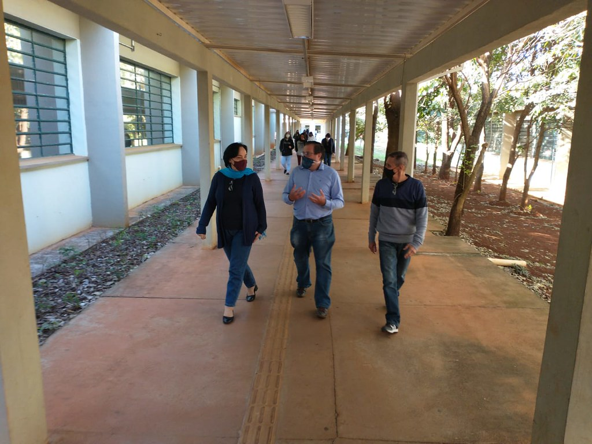

Um pouco sobre mim
Me chamo Guilherme Henrique Andrade Farias, tenho 19 anos e muitos sonhos a serem realizados ainda. Dia após o outro batalhando sem nenhuma falha, porque eu acredito que a obsessão ganha do talento. Moro em Sertãozinho, SP (interior de São Paulo). Sou um fã de esportes e tenho como um time do coração o Barcelona que sempre gostei de assistir. Sou uma pessoa muito focada nos meus treinos, estudos e principalmente, uma pessoa muito disciplinada com meus deveres, tarefas e metas que eu coloco para cumprir
Tenho algumas formações extracurriculares, porém estudei em duas otimas escolas enquanto estive no ensino fundamental e no ensino médio. A minha primeira escola, o ensino fundamental foi a Escola Caminho Suave onde estudei do primário até o nono ano

Meu ensino médio, acabei realizando ele no Instituto Federal de São Paulo (IFSP) no campus de Sertãozinho (Uma instituição Federal). Cursei automação industrial no meu ensino, então acabei virando um técnico em automação industrial. Atuei na area durante um ano e tres meses, porém, acabei saindo do ramo pois eu via que não era exatamente aquilo que eu queria seguir de carreira. Trabalhei como instrumentista relizando manutenção em posicionsadores e transmissores de diversas marcas.
